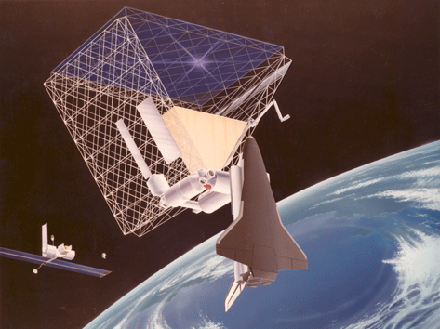
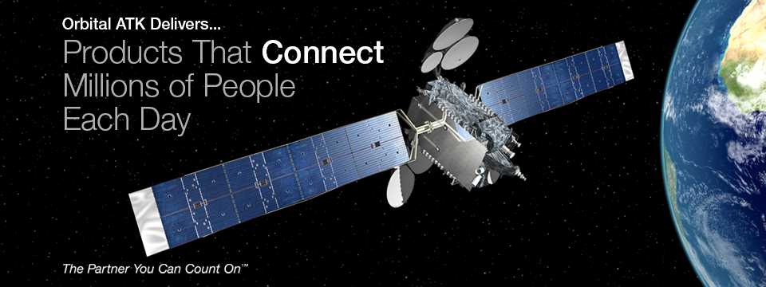
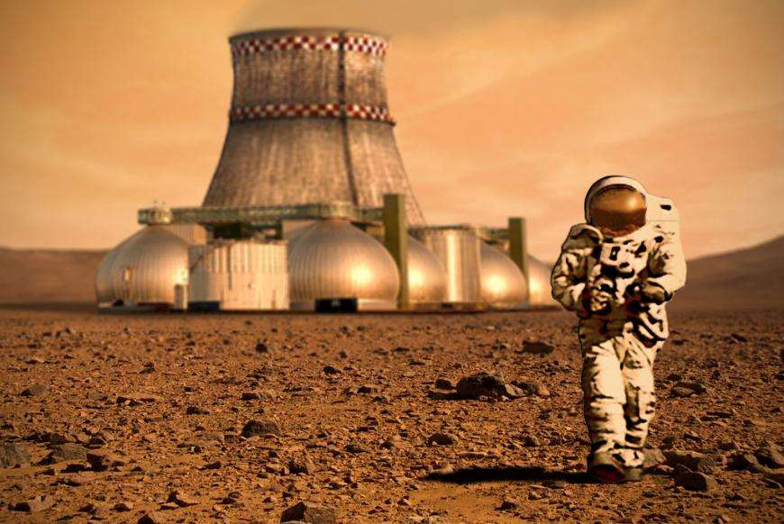

Introduction
The idea of setting up colonies on other planets is a popular science fiction topic. Imagine flying out into space and setting up a new colony on another planet (terraforming), it can't be that hard, can it?
There are many issues to consider when discussing the exploration of space. The impact of space travel is profound, and so is the funding required! Who decides which projects are valuable? Who decides if the potential benefits outweigh the potential hazards?
In this lesson, we will examine some of the implications of space travel. It's not possible to discuss all of the problems that need solving or all of the decisions that must be made in this lesson, there are too many. The important thing is that you begin to see that the issues don't fit neatly into compartments labelled "good" or "bad." These issues require a weighing up of pros and cons.

Risks and Hazards
Flying into space is a risky business. Astronauts are exposed to great hazards. Technology is not perfect, and sometimes equipment malfunctions. Evidence of this can be seen in the accidents involving the Challenger (1986) and Columbia (2003) space shuttles.
Space Junk
Since humans travelled into space for the first time, orbiting debris has been accumulating around the Earth. Occasionally, materials break away from space shuttles and satellites and end up in orbit around the Earth. Space junk can cause a lot of damage to spacecraft in costly and possibly fatal collisions. Even a speck of paint hitting a shuttle or probe can cause serious damage.
SpaceX
Private enterprises such as SpaceX manufacture and launch reusable rockets and spacecraft. These 'space taxis' can ferry cargo to the International Space Station (ISS). NASA is supportive of the private business ventures of SpaceX and Orbital ATK and sees both as positive developments.
Aboard the International Space Station, Expedition Flight Engineer Don Pettit and Joe Acaba of NASA and European Space Agency Flight Engineer Andre Kuipers opened the hatch to SpaceX's Dragon cargo craft and entered the vehicle on May 26, 2012, one day after the world's first commercial cargo spacecraft was berthed to the Earth-facing port of the Harmony module. Dragon remained berthed to Harmony for 5 days, enabling the crew to unload supplies for the station's residents before it is re-grappled and released to return to Earth for a parachute-assisted splashdown in the Pacific Ocean off the coast of southern California.
Orbital ATK
Orbital ATK Inc. is a private enterprise American aerospace manufacturer and defence industry company. Orbital ATK designs, builds and delivers space, defence and aviation-related systems to customers around the world both as a prime contractor and as a merchant supplier. It has a workforce of approximately 12 000 employees dedicated to aerospace and defence including about 4 000 engineers and scientists; 7 000 manufacturing and operations specialists; and 1 000 management and administration personnel.

Expandable Spacecraft in ISS
When Elon Musk's SpaceX rocket roared into the skies above Cape Canaveral in June 2017, it was on a mission for NASA, carrying nearly 7 000 pounds of cargo to the International Space Station; food, supplies and Robert Bigelow's expandable spacecraft. Las Vegas real-estate tycoon, Robert Bigelow, developed an expandable spacecraft; a large, lightweight structure that inflates in space, a technology that could dramatically change how humans live and work in zero gravity. After the successful expansion of Bigelow Aerospace's BEAM aboard the International Space Station, the next steps for the technology are being looked at. Robert Bigelow explains some its potential uses.
Expanding Our Horizons
Travel has become increasingly accessible to more people; the world no longer seems so big. Tourism is a big business, and far-reaching destinations are becoming more and more popular. So why not expand to outer space?
As technology develops, space travel becomes safer and more efficient. Some companies already cater to space tourism. Short flights into space and holidays at the International Space Station are just a couple of the ideas that are being marketed to adventurous (and wealthy!) tourists.
Space tourism has many benefits that include, but are not limited to:
- increased revenue for space technologies
- increased public interest in space technologies
- pressure on developers to increase efficiency and decrease costs involved in space travel
- opportunities for non-astronauts to experience space firsthand.
Space Tourism
Private enterprise is changing the face of human spaceflight in sub-orbital space. Companies such as Virgin Galactic are planning to offer tourists the thrill of a ride following a ballistic trajectory 100 kilometres into space, where the craft will float for about four to five minutes before returning to Earth.
Space Adventures
Founded in 1998, Space Adventures, Ltd. is the world’s premier private space flight company and the only company currently providing opportunities for actual private space flight and space tourism. Working side-by-side with professional astronauts and cosmonauts, they are the first and only company to have sent self-funded individuals to space. Their clients have cumulatively spent close to three months in space and travelled over 36 million miles.
Space travel for individuals is progressing.
Terraforming

The development of new technologies is one of the possible benefits of space tourism. Terraforming is the idea that an environment can be altered in order to imitate the environment present on Earth. Basically, this involves creating an atmosphere and ecosystems similar to those on Earth, on another planet.
"The Martian" is a 2015 American science fiction film based on Andy Weir's 2011 novel 'The Martian'. Matt Damon stars as an astronaut who is mistakenly presumed dead and left behind on Mars. The film depicts his struggle to survive and others' efforts to rescue him. When Weir wrote the novel 'The Martian', he strove to present the science correctly and used reader feedback to get it right. The film received help from James L. Green, the Director of the Planetary Science Division at NASA's Science Mission Directorate. Ed Finn, director of the Centre for Science and the Imagination at Arizona State University, said, "What this story does really well is imagine a near-future scenario that doesn't push too far from where we are today technically." British physicist Brian Cox said, "The Martian is the best advert for a career in engineering I've ever seen."
There are many arguments for and against the development and implementation of terraforming.
For:
- Expanding to another planet could relieve the increased overcrowding of Earth. Also, some people believe it would be a good idea to have a backup plan in case resources are depleted on Earth.
Against:
- Creating an Earth-like biosphere on another planet would be an extremely costly project, and may not be sustainable in the long-term. It is possible that altering the environment of another planet could result in long-term damage to that planet. In fact, the results of such an experiment are not known because it has never been done.
Research and Development
A great deal of money is spent on the research and development of space-related technologies. Often there is controversy surrounding projects that require public funding. People debate how limited resources should be divided among a wide range of research topics.
Like any other issue, the development of space technologies has supporters and detractors. Some people feel that money could be better spent addressing problems here on Earth. Others will point out that many developments and discoveries in the field of space exploration have benefited other areas of our life here on Earth.
Consumer items such as running shoes and bicycle helmets have improved due to space research. Technologies designed for space have provided better communications and weather satellites that have improved our communications on Earth and provided ways to monitor and manage pollution.
Space research also influences research in the area of health sciences. Astronauts exposed to zero gravity for extended periods often suffer from health problems. By researching ways to prevent conditions such as osteoporosis in astronauts, those suffering from similar conditions on Earth may one day benefit from the research.
Other Considerations
Some of the issues surrounding space explorations have been addressed here, but there are many more that we have not touched on.
Issues surrounding space exploration often fall into three closely connected categories:
- ethics
- environment
- politics
The topics in these three categories overlap. Because there are so many issues around the topic of space exploration, we will conclude this lesson with a number of questions that might be asked, rather than a list of definitive answers.
- Do humans have the right to alter and colonize unique environments on other planets?
- Do humans have the right to remove resources from other planets?
- Should money be used for space travel when there are many problems on Earth to be addressed?
- How will space travel affect Earth's natural systems?
- How will space travel affect the environments on other planets?
- Who is responsible for assessing and regulating environmental impact and minimizing damage?
- Which countries (if any) have ownership of space resources?
- Who is responsible for deciding how space resources should be used?
- Should space technology and resources be shared amongst countries?